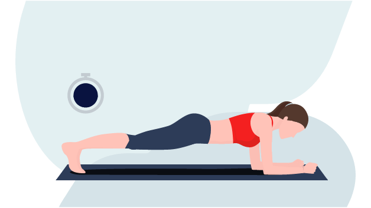

Objetivo
Nosso site tem como objetivo ajudar e conscientizar as pessoas sobre a importância dos exercícios físicos para a qualidade de vida. Aqui, você encontrará exemplos de exercícios simples que qualquer pessoa pode fazer, sem a necessidade de equipamentos ou com equipamentos muito simples. Queremos tornar a prática de atividades físicas acessível a todos, promovendo saúde e bem-estar de maneira fácil e prática.
A Importância dos Exercícios Abdominais
Fortalecimento do Core
Exercícios abdominais fortalecem o core, melhorando a postura e reduzindo o risco de lesões.Melhora da Postura
Fortalecer o abdômen ajuda a manter uma postura ereta e saudável, especialmente para quem passa longos períodos sentado.Redução de Dores Lombares
Um core forte alivia a pressão na coluna, reduzindo dores lombares comuns em ambientes de escritório.Exercícios
Prancha
A Importância dos Exercícios para o Peitoral
Fortalecimento Muscular
Os exercícios para o peitoral ajudam a fortalecer os músculos do tórax, essenciais para muitas atividades diárias e esportivas, proporcionando maior força e resistência.Melhora da Postura
Fortalecer o peitoral contribui para uma melhor postura, equilibrando a musculatura do tronco e prevenindo dores nas costas e ombros.Estética
Um peitoral bem desenvolvido melhora a aparência física, aumentando a confiança e a autoestima.Funcionalidade
Músculos peitorais fortes são importantes para movimentos de empurrar, como abrir portas e levantar objetos, facilitando tarefas cotidianas.Exercícios
Flexão de Braços

A Importância dos Exercícios para as Costas
Fortalecimento Muscular
Exercícios para as costas fortalecem os músculos dorsais, essenciais para manter uma boa postura e prevenir dores nas costas.Melhora da Postura
Fortalecer as costas ajuda a equilibrar a musculatura do tronco, contribuindo para uma postura mais ereta e saudável.Prevenção de Lesões
Músculos dorsais fortes protegem a coluna vertebral, reduzindo o risco de lesões e aliviando tensões.Qualidade de Vida
Manter as costas fortes e saudáveis contribui para o bem-estar geral, permitindo uma vida mais ativa e sem dores.Exercícios
Barra Fixa
A Importância dos Exercícios para as Pernas